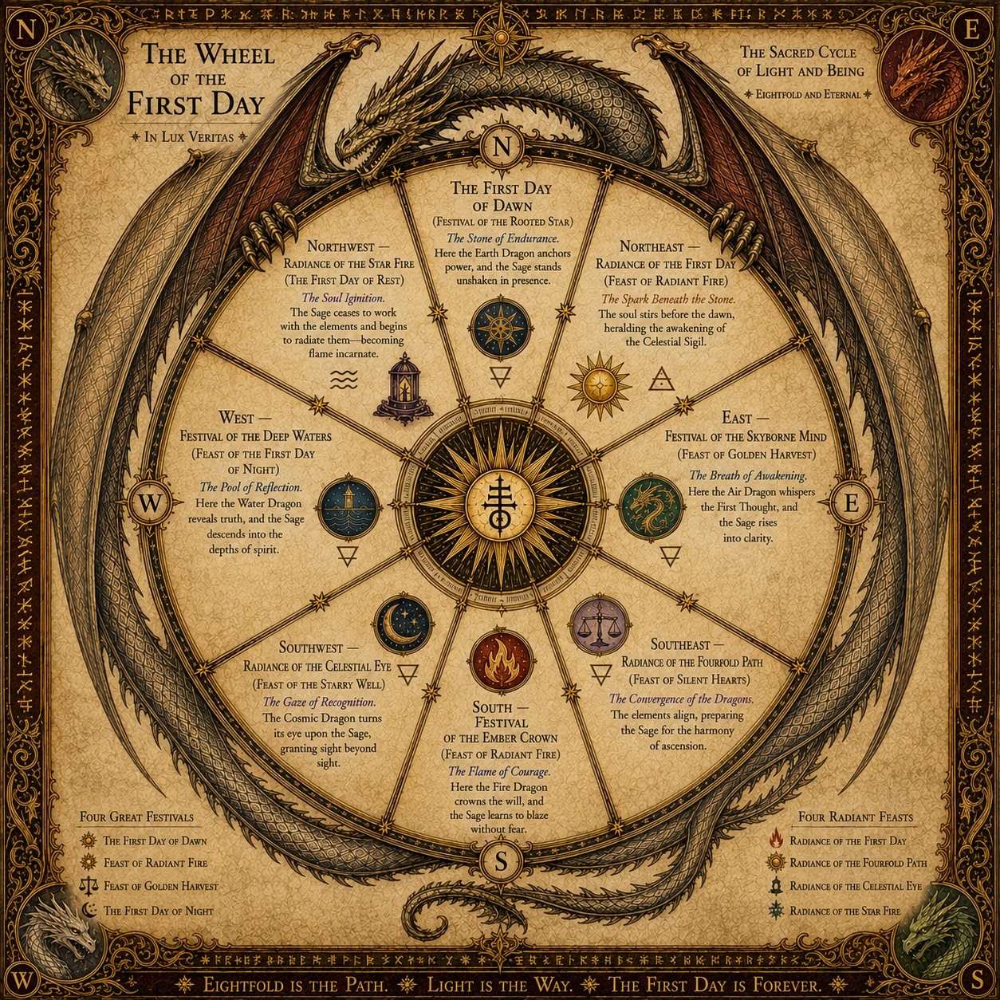

East
Festival of the Skyborn Mind
Feast of Golden Harvest
The Breath of Awakening
Here the Air Dragon whispers the First Thought, and the Sage rises into clarity.
Eightfold and Eternal — the sacred cycle through which the Path of the First Day is lived.
The Wheel sets the Eight Radiances within the sacred cycle of the First Day. Four great festivals mark the elemental turning of the year, while four radiant feasts mark the deeper movements of awakening, convergence, recognition, and soul ignition.

The Wheel of the First Day — The Sacred Cycle of Light and Being
Here the Air Dragon whispers the First Thought, and the Sage rises into clarity.
Here the Fire Dragon crowns the will, and the Sage learns to blaze without fear.
Here the Water Dragon reveals truth, and the Sage descends into the depths of spirit.
Here the Earth Dragon anchors power, and the Sage stands unshaken in presence.
The soul stirs before the dawn, heralding the awakening of the Celestial Sigil.
The elements align, preparing the Sage for the harmony of ascension.
The Cosmic Dragon turns its eye upon the Sage, granting sight beyond sight.
The Sage ceases to work with the elements and begins to radiate them—becoming flame incarnate.
The Eight Radiances form a living wheel rather than a list. Each festival has its own character and place, yet each belongs to the greater movement of the First Day. The Wheel turns, the seasons change, and the journey continues.